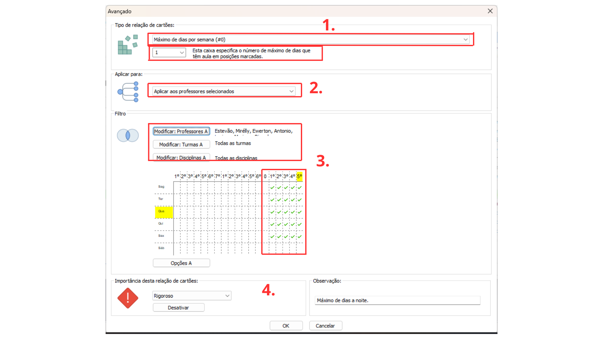

Detalhes do post:
Limite Diário de Aulas para o Docente:
Descrição:O professor gostaria de ter no máximo determinado numero de aulas no dia
Para resolver esse tipo de situação devemos restringir a colocação dos cartões das aulas usando as restrições individuais na aba “PROFESSORES”.

1- Acesse no Menu principal a aba “Professores”.
2- Escolha o professor que solicitou a restrição.
3- Abra a aba de “Restrições” individuais do professor escolhido.
4- Marque a caixa de seleção “Definir número mín./máx. de aulas por dia”, nas caixas de texto logo abaixo digite o número mínimo de aulas por dia que o professor deve lecionar (normalmente não atribuímos número mínimo de aulas) e o número Máximo de aulas por dia nas caixas da esquerda e direita respectivamente.